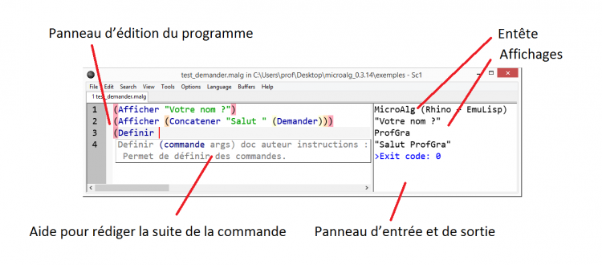

MicroAlg est un langage de
programmation simple et en français.
Il est dédié à l’algorithmique et à son enseignement.
Les débutants en programmation
n’ont pas besoin d’un énorme camion toutes options.
Ils veulent juste une simple trottinette qu’ils
comprennent tout de suite.
John Maeda, lors d’une
interview.
Commencer à apprendre
Commencer à apprendre
Voir la doc technique
Qu’est-ce que MicroAlg ?
MicroAlg est un langage de programmation en français dédié à l’algorithmique et à son enseignement. Simple (des parenthèses et des guillemets pour seuls caractères spéciaux), elle offre un cadre rigoureux pour l’apprentissage des concepts les plus importants de l’algorithmique et de la programmation impérative.
C’est un logiciel libre (licence GPL2), ouvert et gratuit.
Une des forces de MicroAlg est qu’elle est utilisable dans un navigateur. En voici la preuve :
Non seulement le programme ci-dessus peut être exécuté en cliquant sur
le bouton Exécuter, mais aussi
modifié avant d’être exécuté à nouveau, sans avoir à télécharger et
installer quoi que ce soit ! Essayez vous-même en modifiant la valeur 18
dans le programme ci-dessus.
De plus, MicroAlg peut aussi être utilisée de manière traditionnelle, avec un éditeur de texte pour travailler sur des fichiers à organiser comme bon vous semble.
Sur cette copie d’écran, un programme est en cours de rédaction. Il a
été testé une fois (on voit le résultat sur la droite) et une ligne est
en cours de rédaction (celle qui commence par (Definir…).
Dès que l’éditeur reconnaît une commande, il propose une petite fenêtre
d’aide qui rappelle le rôle de la commande et ses paramètres.
À qui s’adresse MicroAlg ?
Le langage en lui-même s’adresse à des enseignants qui voudraient utiliser, avec leurs élèves, un langage de programmation simple et facile à mettre en place. Il s’adresse aussi à des débutants qui voudraient apprendre par eux-mêmes.
Principalement destinée à être utilisée par de grands débutants, MicroAlg n’est plus vraiment utile à quelqu’un qui sait utiliser une structure conditionnelle et une structure répétitive astucieusement. Dans ce cas, la personne peut passer à un langage plus évolué. D’un autre côté, les non-débutants auront toujours quelque chose à apprendre de MicroAlg, de par sa syntaxe inhabituelle et pourtant si limpide : l’arbre des instructions y apparaît tout naturellement.
Ce site propose des tutoriels pour apprendre le langage. Ils permettent à n’importe qui d’apprendre les bases de l’algorithmique (un niveau minimum de lecture et de patience étant requis). Si les tutoriels ne vous conviennent pas, vous pouvez créer vos propres pages dans la galerie, voire intégrer MicroAlg à votre propre site en suivant les instructions d’installation.
Principales caractéristiques
- Une syntaxe simplissime et universelle,
qui s’appuie sur la notation polonaise :
(commande argument1 argument2 …).
Le revers de la médaille étant le fait que2x+1doit être écrit(+ (* 2 x) 1), notation qui peut paraître fastidieuse, mais qui peut être considérée comme très intéressante. En effet, on voit bien sur l’exemple que l’expression est une somme. - Les parenthèses sont colorées en fonction de leur profondeur, pour
aider à leur mise en place correcte :
(Afficher (Concatener (Texte (- (+ 1 (/ (* 2 3) 4)))) " est le résultat."))
- Des mots-clés en français et en nombre réduit.
- La possibilité de programmer en déplaçant des blocs (ou briques), sachant qu’à chaque commande textuelle correspond un bloc et inversement. Voir la démo plus bas sur cette page ou le tutoriel par blocs.
- Différentes plateformes d’exécution, dont Javascript (donc le navigateur), Java et C.
- Une galerie permettant aux enseignants de construire des documents et aux apprenants de publier leur travail.
- Une sortie graphique permettant de dessiner des formes géométrique ou de manipuler une tortue (celle du langage Logo). Voir les algues ou la tortue plus bas sur cette page, et le tutoriel graphique ou le tutoriel tortue.
- La possibilité d’exporter (ou de convertir) du code MicroAlg vers le langage des calculatrices les plus utilisées, ou d’afficher le code MicroAlg sous forme d’arbre pour mieux en comprendre la structure.
- Une intégration avec l’éditeur de texte SciTE très complète (une touche pour exécuter, coloration des parenthèses, aide en ligne sur MicroAlg, auto-complétion, abréviations…).
- De quoi spécifier et vérifier des jeux de test depuis le langage.
- Un mécanisme limitant les boucles infinies.
- Des tirages pseudo-aléatoires
reproductibles
(voir la documentation de la commande
Initialiser@). - Une feuille de route ambitieuse…
Autres petits « trucs » à savoir ou rappels :
Jeunesse
MicroAlg est encore assez jeune, son développement ayant seulement commencé fin mars 2014. Elle est tout de même déjà utilisable, même si elle possède encore quelques limitations. Un brouillon de rapport d’utilisation pour l’année scolaire 2014-2015 est disponible ici.
Le projet est jeune, mais toute demande de fonctionnalité sera étudiée. N’hésitez pas à en proposer par email. Aussi, les contributeurs de tous horizons seront les bienvenus ! Vous pouvez aider ! Même en tant que simple testeur ! En effet, ce sont vos critiques et vos idées qui donneront à MicroAlg sa forme la plus harmonieuse.
Contact
Microalg a un compte Twitter :
@microalg
et une adresse email :
microalg.info@gmail.com.
Son créateur aussi :
@profgraorg
et profgra.org@gmail.com.
Le quartier général des développeurs se trouve sur GitHub :
Vidéos
Présentation de la galerie. D’une part, parcourir la galerie est intéressant car elle propose des contenus divers et variés. Et d’autre part, elle permet à des enseignants ou des apprenants de publier des contenus. Cette vidéo explique, entre autres choses, comment créer une page.
Présentation de l’éditeur. MicroAlg a choisi SciTE, un éditeur de texte simple mais puissant, pour taper du code puis l’exécuter. Cette vidéo explique comment installer puis utiliser cet éditeur.
Exemple : Blocs
Exemple : Algues
La génération des algues peut prendre quelques secondes.
Exemple : Tortue
Appuyer plusieurs fois sur Exécuter pour voir se dessiner
une étoile.
Infos sur ce site
Site maintenu par le créateur de MicroAlg :
@profgraorg
et profgra.org@gmail.com.
Pour une liste des changements de ce site, consulter cette page.
Thème basé sur
Skeleton.
Pièces de puzzle dessinées grâce à
ce
plugin Inkscape.